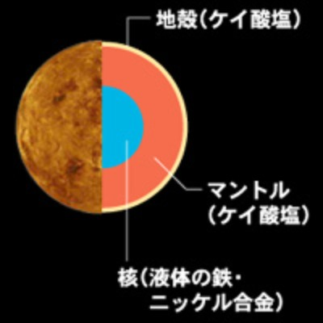
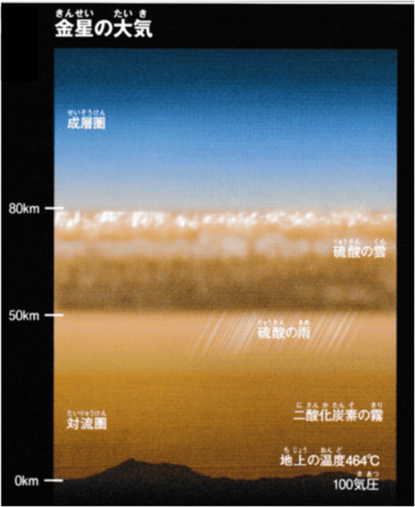
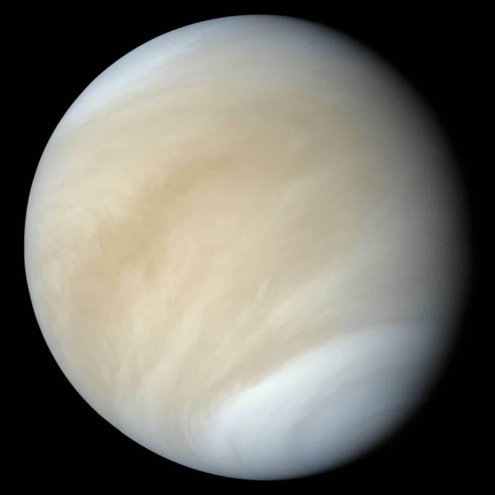
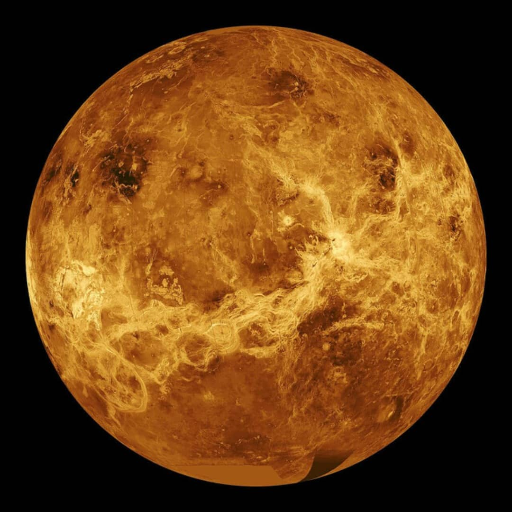

(2024/03/13)
金星の概要
太陽系第二惑星です。
直径が1万2000kmです。質量が地球の4/5で兄弟惑星と呼ばれています。
非常に大気が濃く地表が見えません。
他の惑星とは違い自転の方向がが逆回転になっています。
自転周期が243日で公転周期が224日17時間と一日の長さが一年の長さより長いです。
金星の構造
基本構造

中心から鉄とニッケルの核、マントル、地殻で構成された岩石惑星です。
構造や大気がある点が似ていますが、磁場がありません。
金星の大気

金星の大気の96%が二酸化炭素で高度50km以上では硫酸の雲が惑星全体を覆っています。
そこから硫酸の雨が降っています。更に秒速100mの強い風が吹いています。
これをスーパーローテーションと呼びます。
地上では100気圧にもなり気温が450℃にもなります。
金星の地表
金星の地表は厚い大気のため衛星を送り込むまでわかりませんでしたが、
金星探査機「マゼラン」によって地表の姿を知ることができました。
可視光

レーダー

宇宙豆知識(金星を日の出前と日の入り後にしかに見れない理由)
円を描くとわかりやすいです。
金星は地球より内側を回っているので当然見ようとしたら円の中心寄りを見なければなりません。
となると必然的に太陽も同時に見ることになります。
なので、夜は見れません。そして日中は太陽で明るすぎるので見えません。
同じ理由で水星も夜には見れません。
明け方の金星を明けの明星、夕暮れの金星を宵の明星といいます。